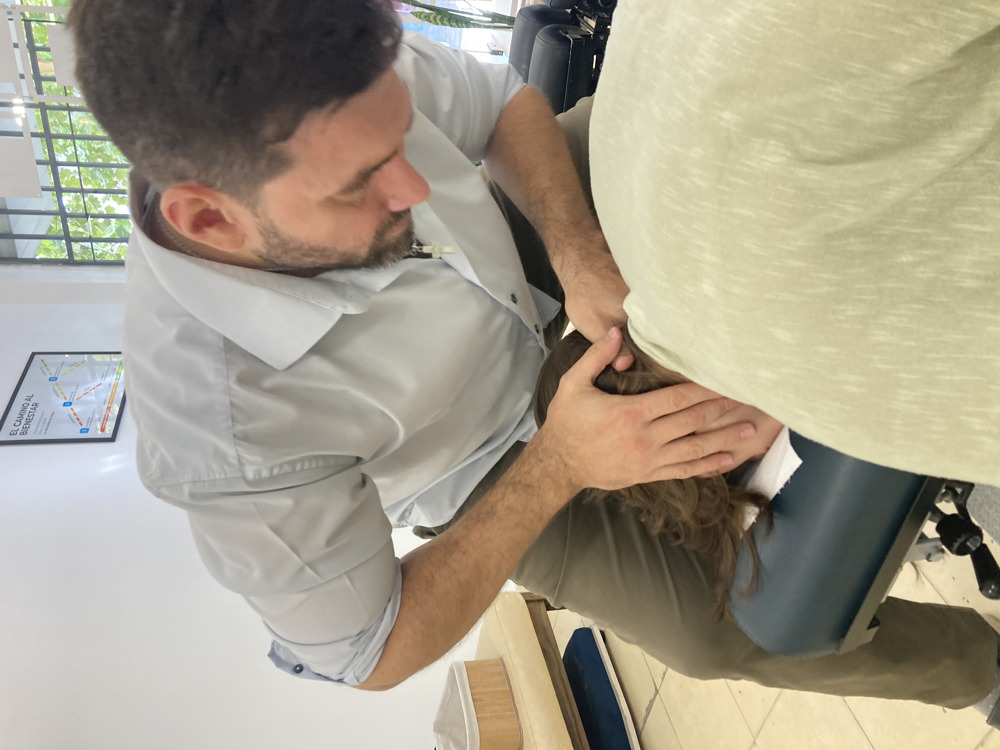
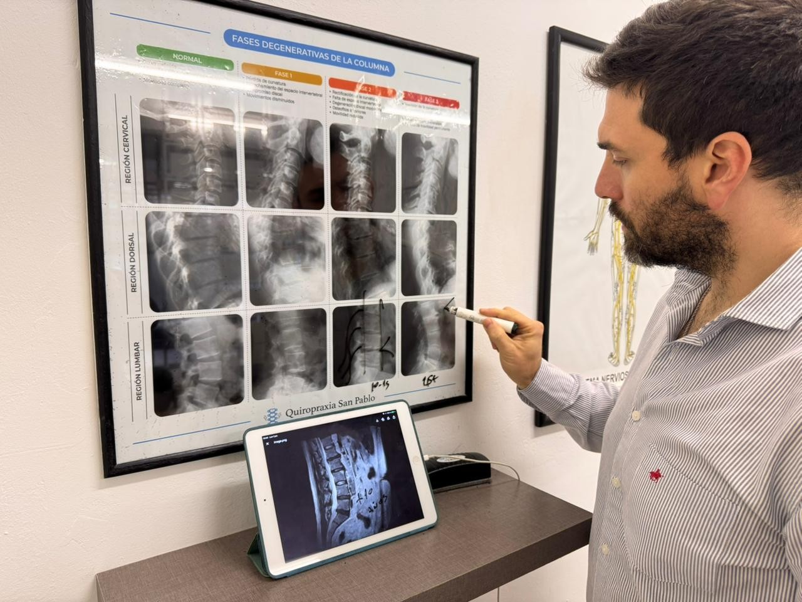
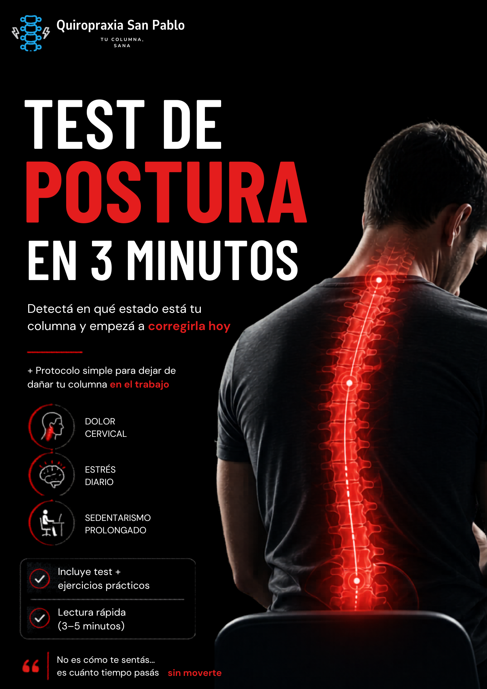

Si ya probaste masajes o kinesiología sin resultados definitivos... descubre el protocolo que te dará un 50% de alivio en 4 semanas corrigiendo la raíz del problema.
Evaluaciones bajo estricto análisis exhaustivo.

Lic. Joaquín
Especialista en Columna
"Antes de empezar a hacerme ajustes en este lugar sufría de dolores constantes en la espalda baja y el cuello, acompañado de mucho estrés y dificultades para mis tareas cotidianas... En estos meses las mejoras empezaron a sentirse, me siento renovado y disfruto actividades que antes me costaba mucho realizar."
Tomás Castro
Google Reviews
"Mi problema era hernia de discos... muchos dolores en ambas piernas, hormigueos... recurrí a un bastón (ya no lo uso). Me recomendó el Lic. Joaquín el tratamiento de tres meses... ya no tengo esas molestias, lento pero muy eficaz. Se los recomiendo, no duden es MUY BUENO."
Manuel E. Medina
Google Reviews
"Después de meses de tener constante dolor cervical, dorsal y lumbar llegar a Quiropraxiasanpablo me cambió la vida. Desapareció el dolor y toda esa carga que sentía en mi espalda desapareció. Infinitamente agradecida. 🙏😊"
Claudia Serra
Google Reviews
Diseñado exclusivamente si cumples con las siguientes características:
Aplicamos datos duros y ciencia biomecánica.
La clave de nuestro éxito es que no nos basamos en el tacto o la intuición. Analizamos tus radiografías al milímetro para encontrar la raíz exacta de tu dolor crónico antes de iniciar cualquier protocolo.

A diferencia de otros, no tocamos tu columna el primer día. Exigimos radiografías y evaluamos a fondo. Decisiones reales basadas en datos.
Te mostramos en tus placas el origen del dolor. Aquí determinamos si calificas para ingresar a nuestro Sistema de Recuperación Vertebral Óptimo.
Apagamos en 4 semanas ese dolor incapacitante ("como un perro mordiendo"). A los 90 días habremos corregido la raíz del problema estructural.

Completa tus datos para coordinar tu Evaluación y el PDF se descargará automáticamente en tu dispositivo, además de abrir WhatsApp para confirmar tu lugar.
"No busques perfección, buscá menos daño."
"Excelente lugar y diría de los pocos para ese tipo de tratamiento con tanta vocación. En mi caso ya había probado de todo y fui mejorando poco a poco, lo importante es la constancia... El licenciado se toma el tiempo y explica todo... recomiendo sin dudas."
Pablo Garcia
Google Reviews
"Empecé por largos años de molestia y dolor lumbar sintiendo que algo no estaba bien en mi postura y viniendo confirmé mis sospechas! Super profesional, explicativo, amable y cálido en sus recomendaciones y trabajo, super recomiendo!"
Nico Cardenas
Google Reviews
"Llegué con un dolor crónico de años, habiendo probado masajes sin éxito. Desde que arranqué el tratamiento noté un cambio rotundo. Volví a dormir de corrido y recuperar mi energía. 100% recomendable, súper profesionales."
Marcela Fernández
Google Reviews